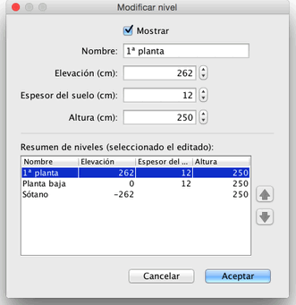

Puedes editar el nombre, la elevación y la altura de un nivel al hacer doble clic en su pestaña, o eligiendo en el menu, Plano
> Modificar nivel...
El panel de modificación de nivel te permite editar sus atributos, pero también muestra una tabla que
describe todos los niveles de la casa donde la línea seleccionada coincida con el nivel que se está editando.

El espesor de la planta se utiliza para calcular el borde vertical, alrededor del suelo en la vista 3D. Esta superficie es visible
alrededor de los agujeros en el suelo y en la separación de un entrepiso o un balcón.
La elevación de un nivel puede ser positiva o
negativa. En el último caso, el terreno se excavará automáticamente en la vista 3D cada vez que un elemento del mobiliario, una habitación o un
conjunto cerrado de paredes se añada al nivel subterráneo. Esta característica se puede utilizar para colocar una piscina o para crear un
sótano de uno o más niveles.
|